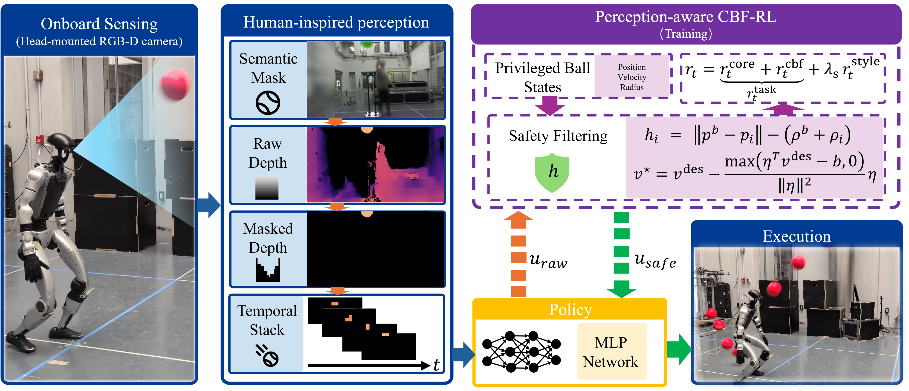

Abstract
We present PAC-MAN, a perception-aware CBF-RL framework that couples control-barrier safety with deployment-realistic onboard sensing for whole-body humanoid dodgeball. The deployed policy sees the ball only as segmentation-masked depth from a head-mounted camera, while training-time CBF guidance represents clearance to every body link and an adversarial motion prior regularizes the resulting evasive reflexes. We evaluate on a controlled any-link contact benchmark with seeded throws in two regimes: single throws and a deployment loop in which the robot walks back to its station and recovers between throws. On this benchmark, the policy comes within a few points of a privileged state oracle: a fixed onboard camera alone is adequate for evasion. We find that usable barrier structure depends on perceptual observability: Joint-CBF gives the best performance with accurate ball states, degrades under fixed-camera observations when used only as training guidance, and recovers with a ball-tracking gimbal or privileged runtime filter. We therefore deploy a lightweight Link-CBF policy zero-shot on the Unitree G1 in the real world, where it tolerates imperfect perception, succeeds on 95% of throws, and uses semantic segmentation to dodge different balls.
Try it in your browser
Zero-shot hardware deployment
The fixed-camera Link-CBF policy transfers to the Unitree G1 with no fine-tuning. On the real robot, an EfficientTAM segmenter masks the ZED depth image down to the same ball-only observation used in training, and the robot walks back to its station and recovers between throws — the same deployment loop as the simulation benchmark.
20-throw hardware evaluation. 19 of 20 hand throws dodged (95%), 0 falls, with onboard segmentation and depth shown live.
Different balls, same policy. Because the policy sees the threat only as segmentation-masked depth, semantic segmentation makes perception ball-agnostic — the robot dodges balls it never saw in training.
Perception-aware CBF-RL

A ball is launched toward the humanoid, which must move every body link out of its path and stay upright — using only proprioception and onboard depth at deployment. Safety is shaped at training time through the reward
where $r^{\mathrm{core}}$ is the pelvis-centered evasion term of prior humanoid dodgeball work, $r^{\mathrm{style}}$ is the adversarial motion prior, and $r^{\mathrm{cbf}}$ carries the whole-body barrier structure at one of two levels:
Link-CBF (deployed)
One clearance barrier per robot link,
the ball-to-link distance minus their combined radii, so the collision-free set is $\mathcal{C}=\bigcap_i\{h_i \ge 0\}$. The reward penalizes violating the barrier condition $\dot h_i + \alpha h_i \ge 0$ at the most-binding link:
The class-$\mathcal{K}$ term $\alpha h_i$ ramps the penalty up over the final approach rather than only at contact. Link-CBF enters only through the training reward — it guides the policy toward the safe set with nothing to enforce online, which is why it deploys as-is on hardware.
Joint-CBF (guidance / privileged filter)
A joint-space module defends the most-threatened body point $i^{\star}$ with a squared-distance barrier: enforcing $\dot h_{i^{\star}} \ge -\alpha h_{i^{\star}} + \delta$ yields one affine constraint $\eta^{\top} v \le b$ on the joint velocity, and the safe command is the closed-form projection
which leaves $v^{\mathrm{des}}$ untouched whenever the constraint already holds, and tightens via an urgency margin $\delta$ as time-to-contact drops. During training it shapes $r^{\mathrm{cbf}}$ with a correction cost on $\lVert v^{\star} - v^{\mathrm{des}} \rVert^{2}$ and a buffer cost against skimming the keep-out boundary; kept active at test time (+filter), it needs privileged ball states and serves as a simulation-only safety ceiling.
Emergent dodge modes
No evasion is scripted: from the barrier rewards and the motion prior, distinct whole-body dodge modes emerge and are selected by where the throw is headed.
duck
sidestep left
sidestep right
Same throw, different policy
On identical seeded throws, the barrier reward and the perception regime each decide hits. Without barrier structure, a core-distance reward protects the torso but sacrifices the limbs; and the stronger Joint-CBF guidance only pays off when perception keeps the ball observable — a fixed camera loses it, a ball-tracking gimbal recovers it.
Core distance reward only: hit
Link-CBF reward: dodged
Fixed camera + Joint-CBF: hit
Gimbal camera + Joint-CBF: dodged
Bottom row: both policies are trained with the Joint-CBF reward and differ only in perception.
BibTeX
@article{yang2026pacman,
title = {PAC-MAN: Perception-Aware CBF-RL for Whole-Body Safety in Humanoid Dodgeball},
author = {Yang, Lizhi and Li, Junheng and Ames, Aaron D.},
year = {2026},
journal = {arXiv preprint arXiv:2607.28623}
}